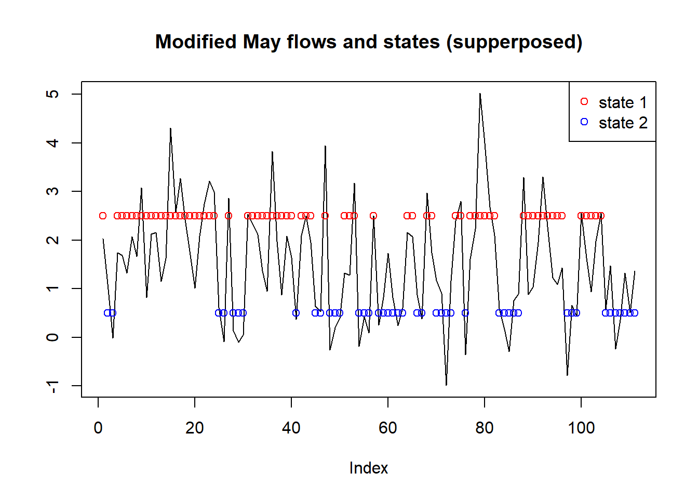
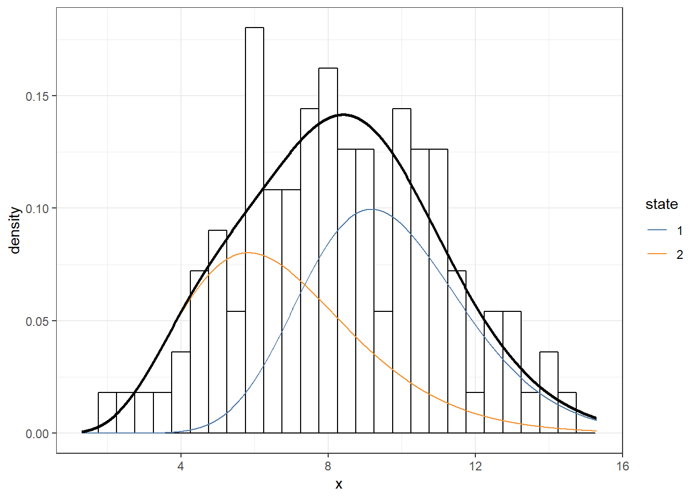
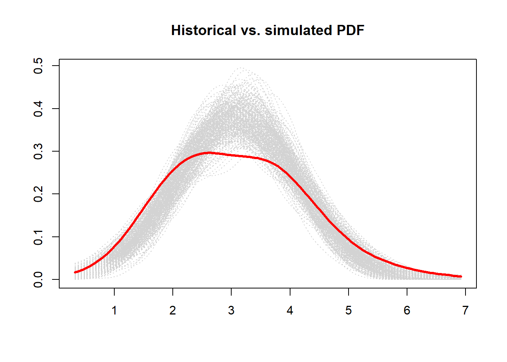
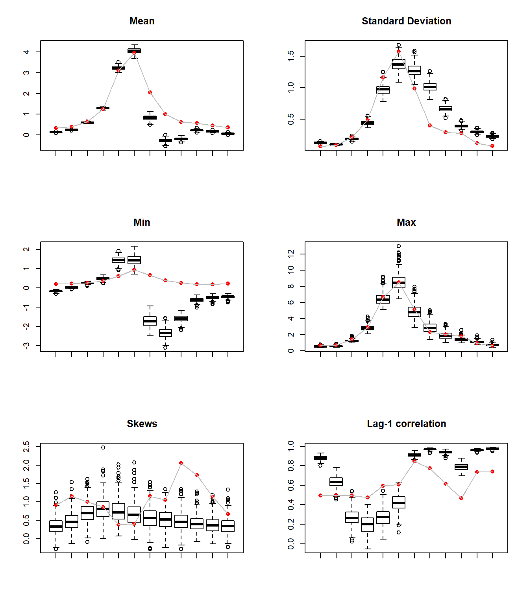
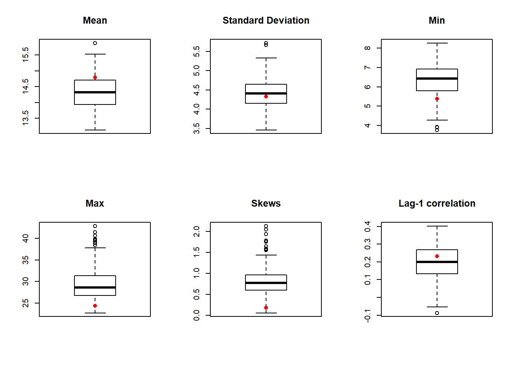

Exercise 4 Non stationary time series - Hidden Markov Model
Another way to simulate a time series is using Hidden Markov Model (Markov Chain + resampling).
First, we load the libraries, streamflow data, and functions via R markdown (attached at the end of the document).
# libraries
libr=c("HiddenMarkov","ggplot2","data.table","ggthemes",
"magrittr","sm","moments","MASS","leaps")
options(warn=1)
suppressPackageStartupMessages(lapply(libr,
require, character.only = TRUE))## Load flow data
flow = read.table(
"http://civil.colorado.edu/~balajir/CVEN6833/HWs/HW-3-2018/LeesFerry-monflows-1906-2016.txt")
flow = flow[,2:13] %>% `rownames<-`(flow[,1]) %>%
setNames(.,c("jan","feb","mar","apr","may","jun",
"jul","aug","sep","oct","nov","dec")) %>%
{./10^6} # convert AF to MAF
x = flow$may ## select the May month flows4.1 Fit a best HMM for the May Lees Ferry streamflow
The code below fits HMM models of orders 2 through 6 and calculates the AIC for each. The best order is the one with the least value of AIC.
## Fit HMM models of orders 2 through 6. Obtain the AIC for each
## Best order is the one with the least value of AIC.
family <- "gamma" # underlying distribution for hmm
discrete <- FALSE
aic1=c()
for(imodel in 2:6){
m <- imodel #model order to fit
stationary <- F # use a stationary distribution of mixtures
# different initial condition types when family == "norm"
ic <- "same.sd"#c("same.sd","same.both","both.diff")
fd.name <- ifelse(family == "norm", "normal", family)
Pi <- Pi_init(m) # T.P.M.
delta <- delta_init(m)
pars <- get.named.parlist(x, m, fd.name, lower=.0, ic)#,start=list(shape1=2,shape2=2))
# set up the model
hmm <- dthmm(x, Pi=Pi, delta=delta, family, pars, nonstat=!stationary, discrete = discrete)
sink("p.4.hmm.fit")
if(imodel < 2){
hmm <- BaumWelch(hmm, bwcontrol(maxiter = 1000,
posdiff=TRUE,converge = expression(diff > tol)))
} else {
hmm <- BaumWelch(hmm, bwcontrol(maxiter = 1000, tol = 1e-08))
}
sink()
# get the hidden states from the fitted model
# Global decoding. To get the probability of being in a state: hmm$u
decoding <- Viterbi(hmm)
# get AIC
aic <- AIC(hmm)
aic1=c(aic1,aic)
}We select the HMM with the lowest AIC. In this case, this happens to be of order 2.
We rerun the HMM for best order (m=2) and generate the state sequence (decoding) resulting from it. The model summary is also attached.
## Get the best order
bestorder = order(aic1)[1] +1
## Fit the model for this best order
m <- bestorder #model order to fit
stationary <- F # use a stationary distribution of mixtures
# different initial condition types when family == "norm"
ic <- "same.sd"#c("same.sd","same.both","both.diff")
fd.name <- ifelse(family == "norm", "normal", family)
Pi <- Pi_init(m) # T.P.M.
delta <- delta_init(m)
pars <- get.named.parlist(x, m, fd.name, lower=.0, ic)#,start=list(shape1=2,shape2=2))
# set up the model
hmm <- dthmm(x, Pi=Pi, delta=delta, family, pars, nonstat=!stationary, discrete = discrete)
sink("p.4.best.hmm")
hmm <- BaumWelch(hmm, bwcontrol(maxiter = 1000, tol = 1e-08))
sink() # end hidding output
decoding <- Viterbi(hmm)print(summary(hmm))## $delta
## [1] 1.000000e+00 1.165686e-105
##
## $Pi
## [,1] [,2]
## [1,] 0.7046161 0.2953839
## [2,] 0.3414245 0.6585755
##
## $nonstat
## [1] TRUE
##
## $distn
## [1] "gamma"
##
## $pm
## $pm$rate
## [1] 4.062194 2.974821
##
## $pm$shape
## [1] 15.20308 6.99202
##
##
## $discrete
## [1] FALSE
##
## $n
## [1] 111cat('Model order:',m,'\n')## Model order: 2p <- ggplot_stationary_hmm(hmm,.5)
print(p)## Warning: Removed 1 rows containing missing values (geom_bar).state.1=ifelse(decoding==1,2.5,NA)
state.2=ifelse(decoding==2,0.5,NA)
plot(flow$may-mean(flow$may)+1.5,type="l",ylab="",
main="Modified May flows and states (supperposed)")
points(state.2,col='blue')
points(state.1,col='red')
legend("topright",legend=c("state 1","state 2"),col=c("red","blue"),pch=1)
4.2 Generate 250 simulations from the fitted HMM
This involves generating the state sequence from the transition probability matrix and resampling flows from the corresponding component distribution.
# Now simulate
# First simulate a sequence of states from the TPM
# simulate from the transition probability
N = length(x)
nsim = 250
nprob = length(decoding[decoding == 1])/N
delta1=c(nprob,1-nprob) #stationary probability
zsim = mchain(NULL,hmm$Pi,delta=delta1)
may.sim = matrix(0,nrow=nsim,ncol=N)
# Points where May PDF is evaluated
xeval=seq(min(flow$may)-0.25*sd(flow$may),
max(flow$may)+0.25*sd(flow$may),length=100)
sim.pdf=matrix(0,nrow=nsim,ncol=100) # Array to store May simulated PDF
may.stat=matrix(NA,ncol = 6,nrow = nsim) # year statistics
colnames(may.stat) = c("mean","stdev","min","max","skew","cor")
for(isim in 1:nsim){
zsim = simulate(zsim,nsim=N)
## now simulate the flows from the corresponding PDF
flowsim = c()
for(i in 1:N){
if(zsim$mc[i] == 1)xx=rgamma(1,shape=hmm$pm$shape[1],
scale=1/hmm$pm$rate[1])
if(zsim$mc[i] == 2)xx=rgamma(1,shape=hmm$pm$shape[2],
scale=1/hmm$pm$rate[2])
flowsim=c(flowsim,xx)
}
may.sim[isim,]=flowsim
sim.pdf[isim,]=sm.density(flowsim,eval.points=xeval,
display="none")$estimate
# fill statistics
may.stat[isim,"mean"]=mean(flowsim)
may.stat[isim,"max"]=max(flowsim)
may.stat[isim,"min"]=min(flowsim)
may.stat[isim,"stdev"]=sd(flowsim)
may.stat[isim,"skew"]=skewness(flowsim)
may.stat[isim,"cor"]=cor(flowsim[-N],flowsim[2:N])
}The statistics from the historical data is added in the first row of the statistics matrix.
# Compute statistics from the historical data.
obs=1:6
obs[1]=mean(flow$may)
obs[2]=sd(flow$may)
obs[3]=min(flow$may)
obs[4]=max(flow$may)
obs[5]=skewness(flow$may)
obs[6]=cor(flow$may[-N],flow$may[2:N])
# bind the stats of the historic data at the top..
may.stat=rbind(obs,may.stat)4.3 Boxplot the resulting statistics
We include the mean, variance, skew, lag-1 correlation, minimum, maximum and PDF from the simulations with the corresponding values from the historical data plotted on them.
# function to plot boxplots with the structure: hist. in first row
plot.bp = function(matrix,name){
xmeans=as.matrix(matrix)
n=length(xmeans[,1])
xmeans1=as.matrix(xmeans[2:n,]) #the first row is the original data
xs=1:12
zz=boxplot(split(xmeans1,col(xmeans1)), plot=F, cex=1.0)
zz$names=rep("",length(zz$names))
z1=bxp(zz,ylim=range(xmeans),xlab="",ylab="",cex=1.00)
points(z1,xmeans[1,],pch=16, col="red")
lines(z1,xmeans[1,],pch=16, col="gray")
title(main=name)
}par(mfrow=c(2,3))
plot.bp(may.stat[,"mean"],"Mean")
plot.bp(may.stat[,"stdev"],"Standard Deviation")
plot.bp(may.stat[,"min"],"Min")
plot.bp(may.stat[,"max"],"Max")
plot.bp(may.stat[,"skew"],"Skews")
plot.bp(may.stat[,"cor"],"Lag-1 correlation")
xdensityorig = flow$may %>% sm.density(.,eval.points=xeval,display="none") %>%
.$estimate
plot.pdf = function(eval,histPDF,simPDF){
xeval = eval
plot(xeval,histPDF,pch=".",col="red",ylim=range(simPDF,histPDF),
xlab="",ylab = "")
for(i in 1:nsim)lines(xeval,simPDF[i,],col='lightgrey',lty=3)
lines(xeval,histPDF,lwd=3,col="red")
title(main="Historical vs. simulated PDF")
}plot.pdf(xeval,xdensityorig,sim.pdf)
The model is able to represent accurately all statistics, including lag-1 correlation.
4.4 Fit a GLM for the state series
Instead of simulating the streamflow from a “static” state sequence simulation, the goal is to simulate the state as a prediction from a best logistic GLM. The uncertainty is added choosing random values and comparing them to the initial probability (p1 / p2) of being in a particular state.
enso=read.table("C:/Users/alexb/Google Drive/CVEN 6833 ADAT/zz Homeworks/HW3/enso.txt")
amo=read.table("C:/Users/alexb/Google Drive/CVEN 6833 ADAT/zz Homeworks/HW3/amo.txt")
pdo=read.table("C:/Users/alexb/Google Drive/CVEN 6833 ADAT/zz Homeworks/HW3/pdo.txt")
X = data.frame(decoding[-N]-1,enso[-N,],amo[-N,],pdo[-N,])
colnames(X) = c("ts1","enso","amo","pdo")
Y = decoding[-1]-1
links = c("logit", "probit", "cauchit","log","cloglog") # potential links
comb=leaps(X,Y, nbest=40,method="adjr2")$which # all combinations of cov.
aic <- matrix(1e6,ncol=length(links),nrow = length(comb[,1]))
colnames(aic) = links[1:length(links)]
for(k in 1:length(comb[,1])){ # try every link f. with every comb.
xx = X[,comb[k,]] %>% as.data.frame(.)
for(i in 1:length(links)){
zz=try(glm(Y ~ ., data=xx, family = binomial(link=links[i]), maxit=500),silent=TRUE)
if(class(zz)[1]!="try-error")aic[k,i]=zz$aic[1]
}
}
head(aic)## logit probit cauchit log cloglog
## [1,] 125.3869 125.3869 125.3869 125.3869 125.3869
## [2,] 146.9211 146.8480 147.3203 147.6516 147.2601
## [3,] 148.3173 148.4183 147.6240 148.3154 148.2197
## [4,] 151.5616 151.5576 151.5843 151.5754 151.5692
## [5,] 124.8050 124.6801 125.4507 1000000.0000 125.1181
## [6,] 125.5837 125.6196 125.6204 1000000.0000 125.7381index = which(aic == min(aic), arr.ind = TRUE) # select min. AIC
print(
sprintf("Choosing the GLM which minimizes AIC for binomial family: %s link function and %s covariates",links[index[,"col"]],
paste(colnames(X)[comb[index[,"row"],]],collapse = ', ')))## [1] "Choosing the GLM which minimizes AIC for binomial family: probit link function and ts1, amo covariates"state.glm = glm(Y ~ ., data=X[,comb[index[,"row"],]], family = binomial(link=links[index[,"col"]]))
summary(state.glm) # Model selected##
## Call:
## glm(formula = Y ~ ., family = binomial(link = links[index[, "col"]]),
## data = X[, comb[index[, "row"], ]])
##
## Deviance Residuals:
## Min 1Q Median 3Q Max
## -1.7872 -0.7333 -0.5345 0.8427 1.9937
##
## Coefficients:
## Estimate Std. Error z value Pr(>|z|)
## (Intercept) -0.8180 0.1756 -4.658 3.19e-06 ***
## ts1 1.2820 0.2683 4.779 1.76e-06 ***
## amo 0.9847 0.5931 1.660 0.0969 .
## ---
## Signif. codes: 0 '***' 0.001 '**' 0.01 '*' 0.05 '.' 0.1 ' ' 1
##
## (Dispersion parameter for binomial family taken to be 1)
##
## Null deviance: 148.06 on 109 degrees of freedom
## Residual deviance: 118.68 on 107 degrees of freedom
## AIC: 124.68
##
## Number of Fisher Scoring iterations: 4ENSO and PDO covariates resulted to be insignificant for the logistic regression, even if several laggings from the original data have been tried.
4.5 Use the state GLM to simulate flows from the component distribution
With the fitted values from the logistic regression, we calculate first the probabilities (p1, p2) of each state.
These are used to generate a random initial state and simulate the rest of the state sequence.
Depending on the simulated sequence, a random gamma value is taken from either state 1 or state 2, creating a new streamflow time series, with the same length as the original data.
The simulation is repeated 250 to generate statistics and ensemble PDF.
X.new = X[,comb[index[,"row"],]]
p1 = 1 - sum(round(state.glm$fitted.values))/length(state.glm$fitted.values)
state = 1:N # init. state
state.p1 = 1:nsim # store p1 for debugging
may.sim.glm = matrix(0,nrow=nsim,ncol=N)
sim.pdf.glm = matrix(0,nrow=nsim,ncol=100) # Array to store May simulated PDF
may.stat.glm=matrix(NA,ncol = 6,nrow = nsim) # statistics
colnames(may.stat.glm) = c("mean","stdev","min","max","skew","cor")
# simulation
for(isim in 1:nsim){
# for(j in 2:N)state[j]=round(predict(state.glm,newdata = data.frame(ts1=state[j-1],amo = amo[j-1,1])))
for(j in 1:N){
if(j==1){
state[1]=ifelse(runif(1)<p1,1,2)
}else{
state[j]=ifelse(state.glm$fitted.values[j-1]<runif(1),1,2)
}
if(state[j]==1){
may.sim.glm[isim,j]=rgamma(1,shape = hmm$pm$shape[1],hmm$pm$rate[1])
}else{
may.sim.glm[isim,j]=rgamma(1,shape = hmm$pm$shape[2],hmm$pm$rate[2])
}
}
state.p1[isim] = 1 - sum((state-1))/length(state)
sim.pdf.glm[isim,]=sm.density(may.sim.glm[isim,],
eval.points=xeval,display="none")$estimate
# fill statistics
may.stat.glm[isim,"mean"]=mean(may.sim.glm[isim,])
may.stat.glm[isim,"max"]=max(may.sim.glm[isim,])
may.stat.glm[isim,"min"]=min(may.sim.glm[isim,])
may.stat.glm[isim,"stdev"]=sd(may.sim.glm[isim,])
may.stat.glm[isim,"skew"]=skewness(may.sim.glm[isim,])
may.stat.glm[isim,"cor"]=cor(may.sim.glm[isim,-N],may.sim.glm[isim,2:N])
}# bind the stats of the historic data at the top..
may.stat.glm=rbind(obs,may.stat.glm)
par(mfrow=c(2,3))
plot.bp(may.stat.glm[,"mean"],"Mean")
plot.bp(may.stat.glm[,"stdev"],"Standard Deviation")
plot.bp(may.stat.glm[,"min"],"Min")
plot.bp(may.stat.glm[,"max"],"Max")
plot.bp(may.stat.glm[,"skew"],"Skews")
plot.bp(may.stat.glm[,"cor"],"Lag-1 correlation")
plot.pdf(xeval,xdensityorig,sim.pdf.glm)
Functions from lib.R:
# source functions
# takend from "http://civil.colorado.edu/~balajir/CVEN6833/R-sessions/session3/files-4HW3/lib.R"
Pi_init <- function(n,type='uniform'){
matrix(rep(1/n,n^2),n)}
delta_init <- function(n, type='uniform'){
d <- rnorm(n)^2
d/sum(d)}
ntile.ts <-
function(x, n, limit.type = 'prob', tie = 1, altobs = NULL ){
# returns an integer vector corresponding to n states broken by equal
# probability or equal distance
#
limit <-
if(limit.type == 'prob')
quantile(x,seq(0,1,1/n))
else if(limit.type == 'equal')
seq(min(x),max(x),by=diff(range(x))/n)
if(!is.null(altobs)) limit <- quantile(altobs,seq(0,1,1/n))
b <- integer(length(x))
for(i in 1:(n+1)){
filter <-
if(tie == 1)
x >= limit[i] & x <= limit[i+1]
else
x > limit[i] & x <= limit[i+1]
#only need to set the 1's because b is already 0's
b[filter] <- as.integer(i-1)
}
if(class(x) == 'ts')
return(ts(b,start=start(x),end=end(x)))
else
return(b)
}
get.named.parlist <- function(x,m,dist,ic,...){
require(MASS)
fit <- fitdistr(x,dist,...)
np <- length(fit$estimate)
pars <- vector('list',np)
names(pars) <- names(fit$estimate)
init <- lapply(fit$estimate,max)
names(init) <- names(fit$estimate)
for(j in 1:m){
#print(j)
#browser()
#browser()
this.fit <- fitdistr(x[ntile.ts(x,m) == (j-1)],dist,init,...)
#for(k in 1:np)
# pars[[k]][j] <- this.fit$estimate[k]
for(k in 1:np)
pars[[k]][j] <- fit$estimate[k]
if(dist == 'normal'){
if(ic == 'same.both'){
pars[[k]][j] <- mean(x)
pars[[k]][j] <- sd(x)
} else if( ic == 'same.sd'){
pars[[k]][j] <- mean(x[ntile.ts(x,m) == (j-1)])
pars[[k]][j] <- sd(x)
}else{
pars[[k]][j] <- mean(x[ntile.ts(x,m) == (j-1)])
pars[[k]][j] <- sd(x[ntile.ts(x,m) == (j-1)])
}
}
}
pars
}
AIC.dthmm <- function(x){
## Return the Akaieke Information criterion value for a fitted discrete
## time hidden markov model from the HiddenMarkov package
# Model order
m <- length(x$delta)
# Log Liklihood value
LL <- x$LL
# number of parameters
p <- m+m^2
# AIC
-2*LL + 2*p
}
ggplot_stationary_hmm <- function(x,binwidth=NULL,res=1000,cols=NULL,...){
m <- length(x$delta)
dens <- matrix(0,nrow=m+1,ncol=res)
r <- extendrange(x$x,f=.05)
xrange <- seq(r[1],r[2],len=res)
delta <- statdist(x$Pi)
if(is.null(binwidth)) binwidth <- diff(range(x$x))/8
for(i in 1:m){
if(x$distn == 'gamma'){
dens[i,] <- delta[i]*dgamma(xrange,shape=x$pm$shape[i],rate=x$pm$rate[i])
}else if(x$distn == 'norm'){
dens[i,] <- delta[i]*dnorm(xrange,mean=x$pm$mean[i],sd=x$pm$sd[i])
}else{
stop('Distribution not supported')
}
dens[m+1,] <- dens[m+1,] + dens[i,]
}
p <- ggplot()+
geom_histogram(data=data.frame(x=as.vector(x$x)),aes(x=x,y=..density..),
binwidth=binwidth,fill='white',color='black')+
theme_bw()
dt <- data.table(x=numeric(0),y=numeric(0), state=integer(0))
for(i in 1:m)
dt <- rbind(dt, data.table(x=xrange,y=dens[i,], state=i))
dt$state <- factor(dt$state)
p <- p + geom_line(data=dt,aes(x=x,y=y,color=state)) +
geom_line(data=data.frame(x=xrange,y=dens[m+1,]),aes(x=x,y=y),color='black',size=1) +
scale_color_tableau() +
scale_x_continuous(limits=r)
p
}
statdist <- function(tpm){
m <- nrow(tpm)
ones <- rbind(rep(1,m))
I <- diag(rep(1,m))
U <- matrix(rep(1,m^2),m)
as.vector(ones %*% solve(I - tpm + U))
}